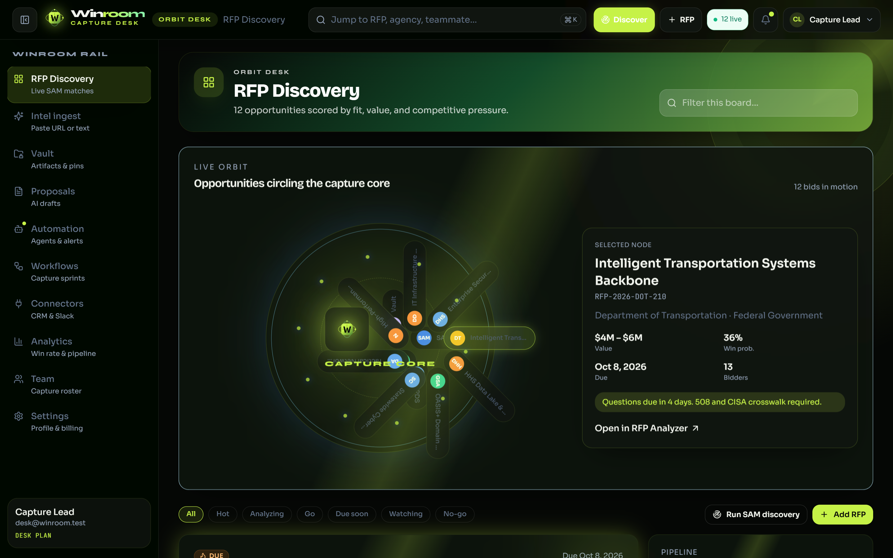
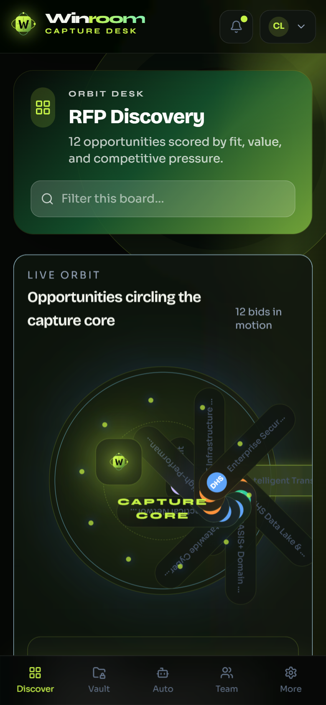
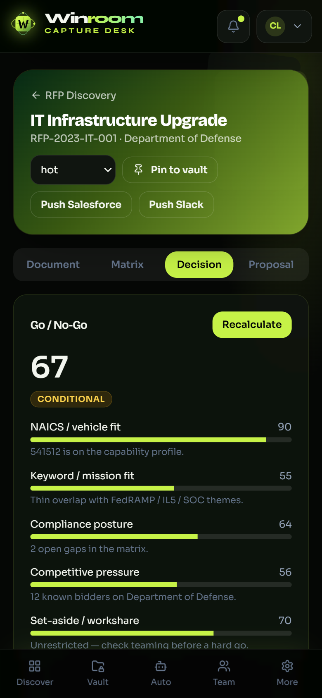
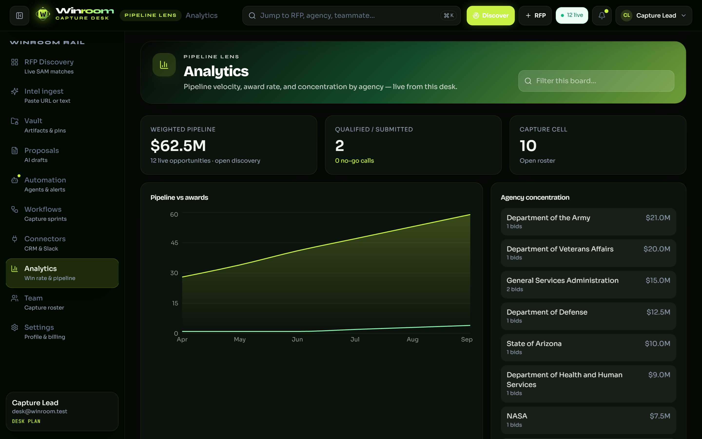
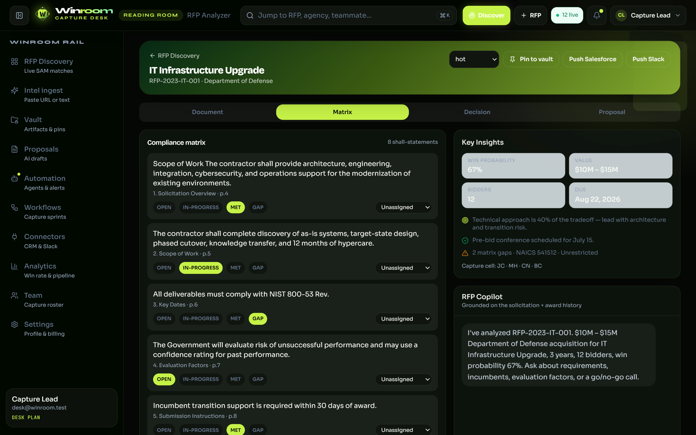
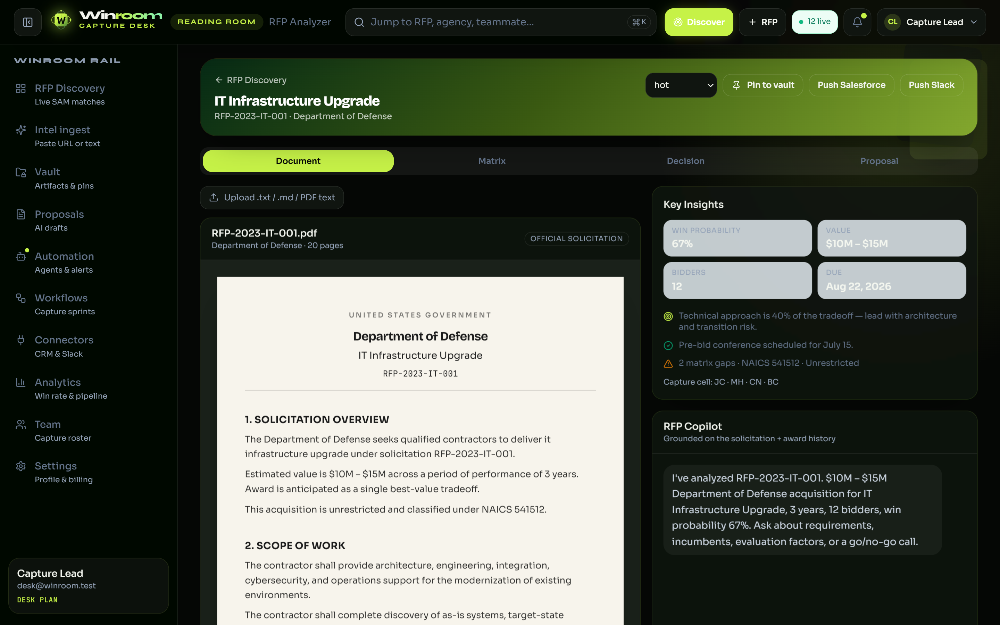
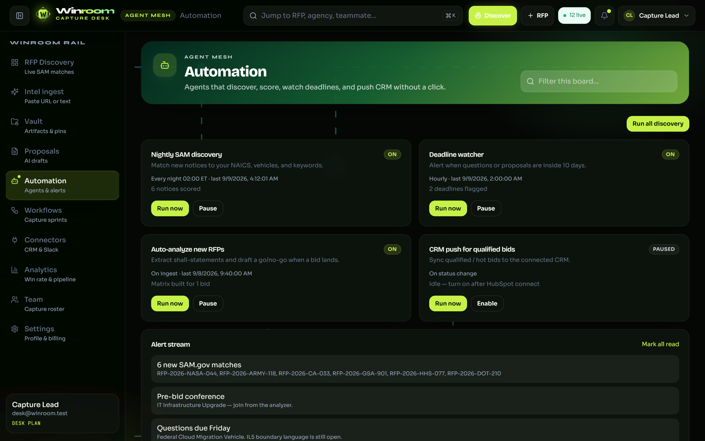

01
Find
Notices live outside the desk. Fit vs NAICS is a memory exercise.
Winroom is a working government-RFP workspace: sign in, keep a capability profile, find notices, ingest a solicitation, score go / no-go, draft Volume I–III, and hold artifacts — on the same desk.
What actually ships. Discovery, Intel, Analyzer, Vault, Proposals, Automation, Workflows, Connectors, Analytics, Team, Settings. OpenAI is optional for copilot and volume polish.


Motive
The desk exists so a lead can discover, decide, and start a volume in one login — not SAM.gov, Word, inbox, a spreadsheet, and a CRM tab.
Notices live outside the desk. Fit vs NAICS is a memory exercise.
Go / no-go happens in a meeting and never lands on the record.
Word starts blank. CRM is a separate, late push.

Why it was built

Business value
Agency, NAICS, value, due date, status, and win probability sit on the bid the team opens.
Go / conditional / no-go is scored from NAICS, keywords, matrix gaps, bidders, and set-aside — then stored.
Volume I technical, Volume II past performance, Volume III price. Model polish only if a key is set.
Alerts, roster, Pilot / Desk / Enterprise plans, and in-desk connector sync — not a live CRM contract.
User journey
The path a capture lead actually takes on this desk. In-desk discovery, not a live SAM.gov API.
Run the in-desk feed, or paste a URL / solicitation text on Intel.
Paste builds the document; shall-like lines get owner and status.
Go / conditional / no-go against the capability profile.
Copilot on the open bid. Volume I–III land in Vault.
Deadline alerts, auto-analyze, in-desk CRM / Slack tag, team.


AI layer
Copilot on the open bid. gpt-4o-mini when a key is set; otherwise a local briefing from stored cover facts.
Volume I–III start as templates. Model polish is additive. No key: the structured draft still lands in Vault.
Not a model call. NAICS, keywords, matrix gaps, bidders, set-aside, win probability — then saved.
Four agents: in-desk discovery, deadline alerts, auto-analyze (matrix + score), CRM tag on a connected connector.
Cookie login. Server-backed workspace. Optional OpenAI. Discovery is an in-desk SAM-style feed — not a live SAM.gov API. Connector sync tags bids on the desk — it does not call Salesforce or HubSpot. No image generation.
The full picture
Winroom is a working capture desk, not a slide. One cookie session. One server-backed workspace. Every module below writes that same record.
Set NAICS and keywords. Run in-desk discovery or paste a URL / solicitation on Intel. Analyzer holds document, matrix, go / no-go, and Volume I–III.
Four agents post alerts, score new bids, and tag a connected CRM / Slack target on the desk. OpenAI is optional. Scoring is rules, not a model.
Not a live SAM.gov API. Not a live Salesforce or HubSpot contract. Not image generation. The desk still moves the bid from notice to vault.
